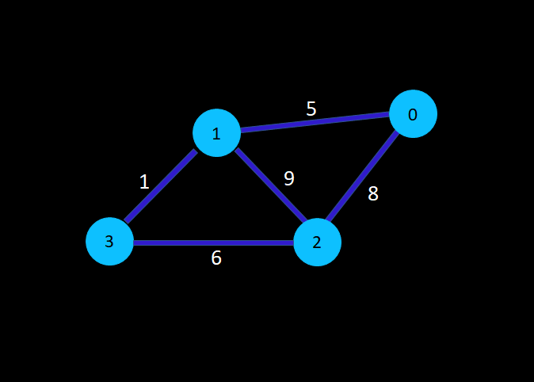

Introduction :
Dijkatra algorithm is useful in finding the shortest path between two nodes of non - negative weighted graphs. It was invented by " Dr. Edsger W. Dijkstra, a brilliant Dutch computer scientist and software engineer. This algorithm exists in many variants, Dijkstra's original algorithm found the shortest path between two any given nodes, but a more common variant fixes a single node as the source node and finds shortest paths from the source to all other remaining nodes of the graph, hence producing a shortest-path tree. It can also be used to find the shortest distance from source node and stopping the algorithm as we reach destinated node. Dijkstra's algorithm is widely used in network routing protocol, such as Intermediate System to Intermediate System (IS-IS) and Open Shortest Path First (OSPF).It uses Greedy approach.
Illustration :

We can phrase the cost matrix based upon the graph given above,
- The cost matrix would be of the order [node][node], where, node = The number of nodes in graphs.
- The [row][column] will be the distance between two nodes, which is basically defined as the cost
of going from one node to another.
- The distance of the node from itself is taken to be Infinity.
- The value of [row][column] which are independent from each other, i.e., there is no direct path
between them, is taken to be infinity.
- There is also a need to keep track of,
- Distance array : It will store the minimum distance from the
source node to all the other respective nodes.
- Visit_check array : It will store the track of the nodes that are
already visited once.
- Parent Array : It will store the path of the parent nodes for all
the nodes other than source node.
The procedure of the Dijkstra
- Firstly, initialize the distance_array[node] with infinity, i.e., it will store the maximum
possible distance between two nodes.
- Now, assign the distance[source] to be zero, because that will be the starting point to enter
the graph and start computing the algorithm.
- Similarly, initialize the Visit_check[node] to be false.
- And, initialize, the Parent[node] with zero.
Distance_[4] : [∞ ∞ ∞ ∞]
Visit_check[4] : [F F F F]
Parent[4] : [0 0 0 0 ]
- Now, the user will provide the values for the source node i.e., his current location and the
final node i.e., where he wishes to reach.
Iteration-1 :
- Start with the source node.
- We are defining Minimum_value and its index (Minimum_index), to compare with the other
nodes.
- Compare the distance[node] with the Minimum_value, which will be initialially kept infinity
and assign it that value if,
(Distance[node] < Minimum_value) AND (Visit_check[node]==False)
Minimum_value = 0
Minimum_index = 0
- Now, mark the index which is visted in the Visit_check array.
Visit_check[4] : [T F F F]
- Now, check the minimum distance between its adjacent nodes, by a loop which will execute only if
all below conditions are true,
- visit_check[node] == False
- distance[Minimum_index] + cost[Minimum_index][Node] < distance[Node]
- cost[Minimum_index][Node] != Infinity
- i = 0 : Not execute, as Visit_check is True.
- i = 1 : Since ( 0 + 5 ) < ∞, Distance_[4] : [0 5 ∞ ∞]
- i = 2 : Since ( 0 + 8 ) < ∞, Distance_[4] : [0 5 8 ∞]
- i = 3 : Since ( 0 + ∞) = ∞,Distance_[4] : [ 0 5 8 ∞]
And assign Parent[Node] = Minimum_index
Iteration-2 :
- Again,Minimum_Value = 5 & Minimum_index = 1
Iteration-3 :
- Again,Minimum_Value = 6 & Minimum_index = 3
Iteration-4 :
- Again,Minimum_Value = 8 & Minimum_index = 2
Pseudocode :
Function Dijkstra()
For each node in graph.dijkstra :
Distance[node] <- Infinity
Visit_check[node] <- False
Parent[node] <- 0
Distance[source] <- 0
For each node upto last second node in graph.dijkstra :
For each node in graph.dijkstra :
Min_Value <- Infinity
Min_index <- (-1)
If ( Visit_check[node] == false ) AND ( distance[node] < min_value )
Min_value <- distance[node]
Min_index <- node
Return Min_index
Visit_check[node] == true
For each node in graph.dijkstra :
If (Visit_check[node] == false) AND
(distance[Min_index] + cost[Min_index][node] < distance[node]) AND
(cost[Min_index][node] not equals Infinity )
distance[Min_index] + cost[Min_index][node] <- distance[node]
parent[node] <- min_index
Print distance[node], parent[node]
Advantages :
- Its time complexity is small (almost linear).
- It works on one source – all pair path, so it gives all the possible shortest.
- It works well for directed weighted graphs with non-negative
weights
Disadvantages :
- It takes a blind scan, which also scans the broader unwanted area in the process, hence it increases the processing time in large graphs.
- It only works for positive weighted graphs, and fails when negative weighted graphs comes into the picture.
- It fails to maintain the sharp edges, which produces the acyclic graph and thus the required shortest path is difficult/impossible to get.
Time Complexity :
O(v^2) where v is vertex